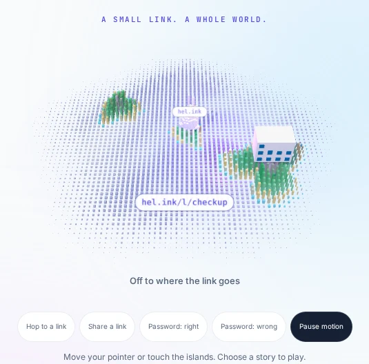
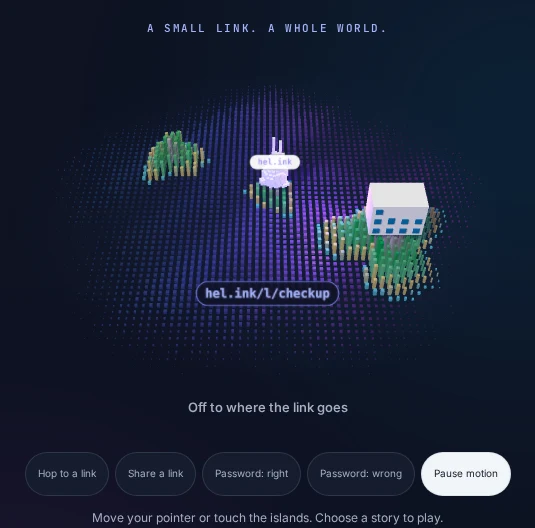
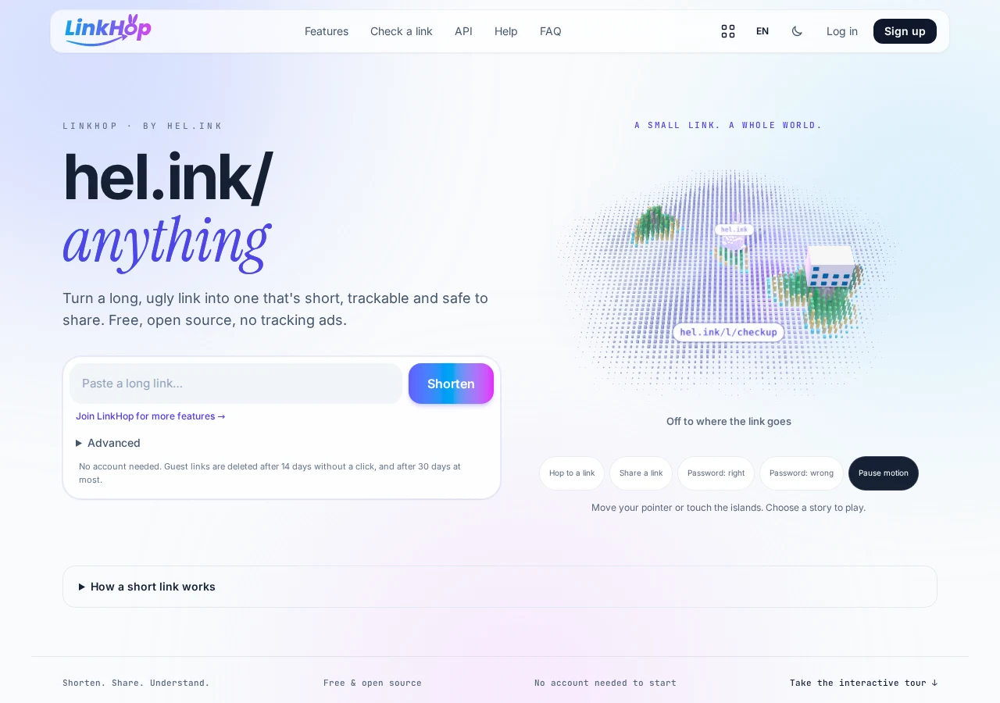
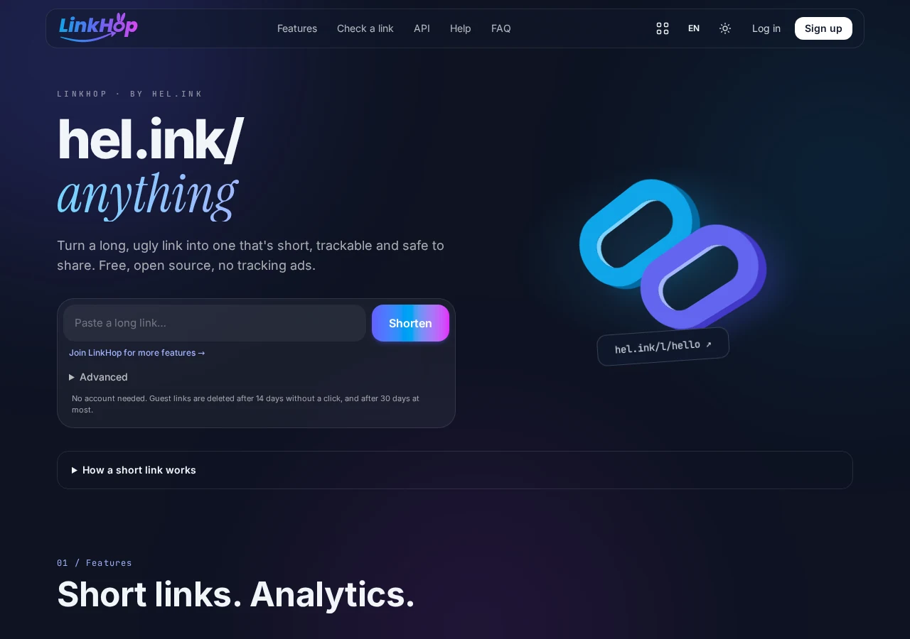

HOP · Der HOP-Kürzer
Kurzlinks, QR-Codes und Klick-Statistiken.
Kürze Links, zähle jeden Klick, werte Besucher nach Land und Gerät aus und schütze sie durch automatische Bedrohungserkennung.
Frei und Open Source unter der MIT-Lizenz. Du suchst Bio-Seiten? Schau dir BioHop an.


Dashboard öffnen ↗Funktionen
- Blitzschnelles Kürzen
Eigene, einprägsame Kurznamen oder zufällige IDs, sofort ausgeliefert unter hel.ink/l/{slug} mit schnellen Weiterleitungen.
- Dynamische QR-Codes
Erzeuge hochauflösende QR-Codes als SVG/PNG für Druck, Verpackung und digitales Teilen.
- Detaillierte Klick-Statistiken
Verfolge Länder (GeoIP), Geräte, Browser, Betriebssysteme und Verweise in Echtzeit.
- Automatischer Schutz vor Bedrohungen
Vorbeugende Prüfung mit hop/safety und gemeinsamen Domain-Sperrlisten schützt dein Publikum.
- Fein einstellbare Link-Regeln
Lege Ablaufdaten, maximale Klickzahlen und Passwortschutz für sensible Ziele fest.
- Ordnung & Tags
Gruppiere Links in Ordner und markiere Kampagnen mit Tags für saubere Teamarbeit und zusammengefasste Berichte.
- Single Sign-on mit HOP ID
Melde dich einmal mit deiner zentralen HOP ID an: keine doppelten Konten, keine zerstückelten Sitzungen.
- REST-API für Entwickler
Vollständige API mit Token-Authentifizierung, um Links per Programm zu erstellen und zu überwachen.
Betreibe dein eigenes LinkHop
Frei und Open Source unter der MIT-Lizenz. Du suchst Bio-Seiten? Schau dir BioHop an.
LinkHop


Häufig gestellte Fragen
Was ist aus den Link-in-Bio-Seiten geworden?
Bio-Seiten sind zu BioHop (bio.hel.ink) umgezogen, einer eigenen, funktionsreichen App. Bestehende Bio-Links leiten nahtlos weiter.
Kann ich eigene Kurznamen verwenden?
Ja, angemeldete Nutzer können für jeden Link einen eigenen Kurznamen wählen, solange er frei und erlaubt ist.
Wie schützt das Klick-Tracking die Privatsphäre?
Klicks werden zusammengefasst, ohne rohe personenbezogene Daten zu speichern oder Nutzerprofile zu verkaufen, und Protokolle werden regelmäßig gelöscht.
Ist LinkHop kostenlos und Open Source?
Ja, LinkHop steht unter der freizügigen MIT-Lizenz und kann von allen genutzt und selbst gehostet werden.
Die HOP-Familie
LinkHop gehört zur HOP-Familie selbst hostbarer Open-Source-Apps.
| App | Wofür | Live-Adresse | Code |
|---|---|---|---|
| HOP ID | Kontoportal, Anmeldung mit HOP ID | hel.ink · hub.hel.ink | navi-crwn/HEL.ink |
| LinkHop | Kurzlinks, QR-Codes & Statistiken | link.hel.ink · hel.ink/l/{slug} | dieses Repository |
| BioHop | Link-in-Bio-Seiten und Designs | bio.hel.ink · hel.ink/b/{slug} | navi-crwn/BioHop |
| PixelHop | Bild- und Medienhosting | pixel.hel.ink · p.hel.ink | navi-crwn/PixelHop |
| NoteHop | Private Notizen, im Client verschlüsselt | note.hel.ink · n.hel.ink | navi-crwn/NoteHop |
| FileHop | Dateien im Browser umwandeln; nichts wird hochgeladen | file.hel.ink | navi-crwn/FileHop |
| PayHop | Zahlungs-QR erstellen und Rechnung teilen; nichts verlässt den Browser | pay.hel.ink | navi-crwn/PayHop |
Hilfe & Support
Einen Fehler gefunden oder Hilfe nötig? Eröffne ein Issue auf GitHub Issues oder sende einen Pull Request.